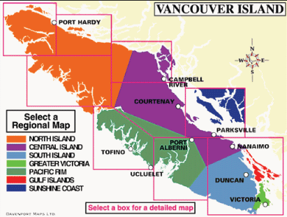

(click on the map to find out more)
Vancouver Island is 456 Km (282 miles) in length and 100 km (62 miles) in width. It is at the west side of British Columbia. Visitors can travel there through cars, buses, and ships.
It is one of the most beautiful places in Canada. It is a combanation of timber, farmlands, fishing streams, villages, and modern cities. This webpage will introduce you some of the beautiful places and cities in Vancouver Island.
Vancouver Island is seperated into three parts: Northern Vancouver Island, Central Vancouver Island, and Southern Vancouver Island.
|
|